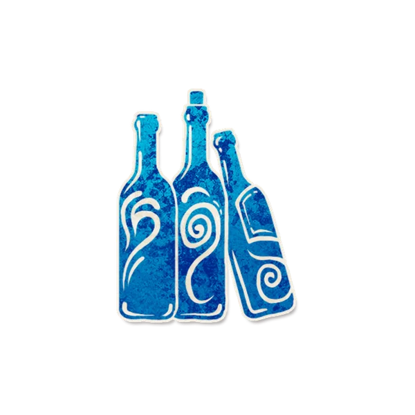

背景故事
“再来一杯？”
角色能力
信源
Each night, you learn a player. They are drunk until dusk and any information they receive is false.
每个夜晚，你得知一名玩家。他醉酒直到下个黄昏，他因自身能力获得的信息均为错误。
角色简介
少妇会让一名玩家醉酒，同时该玩家得到的信息一定是错误的。
- 被少妇醉酒的玩家一定会得知错误信息。哪怕他们醉酒或中毒，信息也一定是错误的。
- 少妇不会影响其他人通过其他方式获得的信息， 例如说书人解释的规则或玩家的角色或阵营的变化。
范例
首个夜晚，少妇得知了北晔。北晔是占卜师，并在当晚使用能力选择了小雨和小诗（干扰项），小雨和小诗都不是恶魔，但是北晔得知是。
第二个夜晚，朝朝是少妇，咕咕是守夜人。朝朝得知了大魔王，咕咕对大魔王发动能力，大魔王得知咕咕是守夜人。
运作方式
唤醒少妇，标记一名玩家醉酒并指向该玩家。
每到黄昏时，醉酒玩家会恢复健康——移除他的醉酒提示标记。
提示标记
- 纸醉金迷
放置时机：在少妇得知信息后。
放置条件：放置在少妇得知的角色标记旁边。若此时少妇醉酒中毒，不放置该标记。
移除时机：白天阶段结束时。
规则细节
与特定角色互动
相克规则
Json字段
{
"ability": "每个夜晚，你会得知一名玩家：他醉酒并得知错误信息。",
"image": "https://www.bloodstar.xyz/p/Airell_clocktower/Assets_of_Lei_Gallery/wench_assets_of_lei_gallery.png",
"edition": "custom",
"flavor": "",
"id": "Wench",
"firstNightReminder": "唤醒少妇，标记一名玩家醉酒并指向该玩家。",
"otherNightReminder": "唤醒少妇，标记一名玩家醉酒并指向该玩家。",
"name": "少妇",
"otherNight": 1601,
"setup": 0,
"reminders": [
"纸醉金迷"
],
"remindersGlobal": [],
"team": "townsfolk",
"firstNight": 5001
}
{kind=link}
图标画师
Dela（海外画师）
角色能力类型
获取信息 醉酒 能力效果干扰